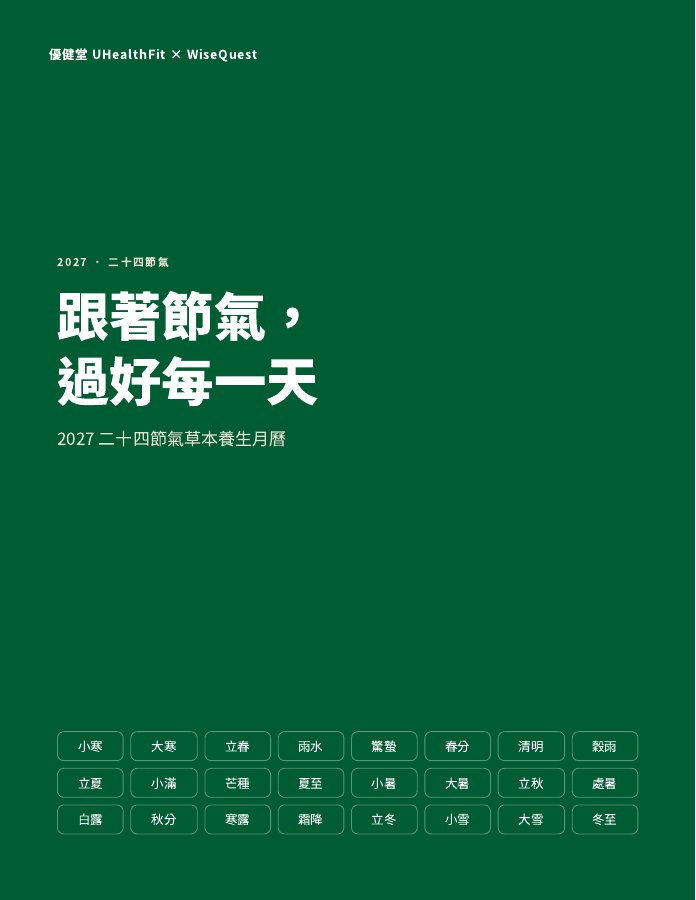
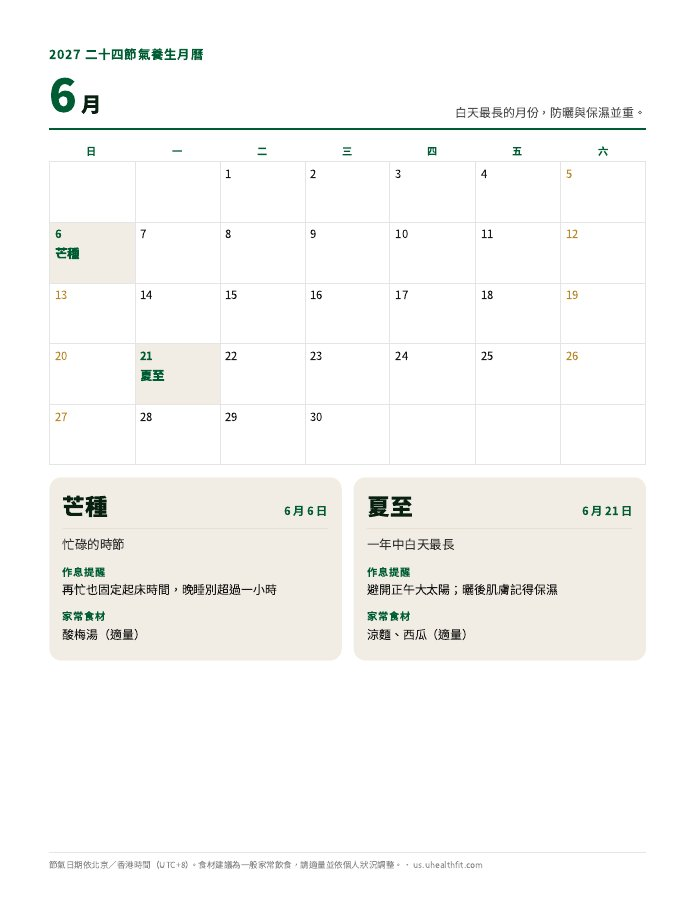

免費下載 · 2027 年版
跟著 24 節氣，把 2027 過得剛剛好
中醫傳統講「順時養生」：天氣變了，作息和飲食跟著調一點。我們把 2027 年的 24 個節氣整理成 12 頁月曆，每個節氣一句作息提醒、一道家常食材，印出來貼在冰箱上就好。
✓ 已收到你的 Email！點這裡下載 PDF →
- 完全免費
- 不用買任何東西
- 隨時可取消訂閱

先看看內容
12 個月、24 個節氣
每個月兩個節氣，各配一句作息提醒、一道家常食材或茶飲。下面是每個月的重點。

- 1 月小寒・大寒最冷的月份，保暖與休息最重要
- 2 月立春・雨水春天來了，從作息開始舒展
- 3 月驚蟄・春分溫差大，穿衣與睡眠都要穩
- 4 月清明・穀雨踏青與花粉季，眼睛也要照顧
- 5 月立夏・小滿入夏，午後小憩讓下午更有精神
- 6 月芒種・夏至白天最長，防曬與保濕並重
- 7 月小暑・大暑最熱的月份，冷飲與冷氣都要適量
- 8 月立秋・處暑入秋，肌膚與作息一起調整
- 9 月白露・秋分中秋時節，飯後散步十分鐘
- 10 月寒露・霜降空氣變乾，眼睛與肌膚多一點保濕
- 11 月立冬・小雪入冬與感恩節，好好吃飯、好好休息
- 12 月大雪・冬至歲末與冬至，早點休息
你會收到
下載就能用
- 12 頁月曆每月一頁，節氣直接標在日期格上，印出來貼冰箱。
- 24 張節氣小卡這時候的天氣、作息提醒、家常食材或茶飲，一眼看完。
- 四季總覽最後一頁把一整年的節奏放在一起看。
適合誰
如果你是……
- 想跟著季節調整作息的人
- 家裡負責張羅三餐的人
- 想幫爸媽留意換季的人
- 喜歡把月曆貼在冰箱上的人

關於優健堂
只講日常做得到的事
優健堂 UHealthFit 是 WiseQuest 草本養護系列的美國中文站。WiseQuest 的配方由黃醫師研發：中國中西醫結合執業醫師、中醫全科醫師，有二十年臨床經驗。
這份《2027 節氣養生月曆》依照我們的內容原則整理：只講日常做得到的小事，不誇大、不製造焦慮，也不取代醫療。
認識黃醫師 →
常見問題
領取前想先知道的事
真的免費嗎？需要買東西嗎？
完全免費，不需要購買任何產品。
節氣日期用哪個時區？
月曆依北京／香港時間（UTC+8）標示，這是節氣最常見的標法。在美國時區，立春、春分、冬至等 11 個節氣會早一天，月曆裡也附了對照說明。
食材建議適合每個人嗎？
都是一般家常飲食，請適量並依自己的狀況調整；有特殊飲食需求、懷孕或正在服藥，請先問醫師。
之後會收到 Email 嗎？
偶爾會收到優健堂的健康養護內容與會員消息。每封信底部都可以一鍵取消訂閱。
PDF 怎麼下載？
送出 Email 後，頁面會立即出現下載連結，手機或電腦都能開啟；用 Letter 或 A4 紙列印都可以。